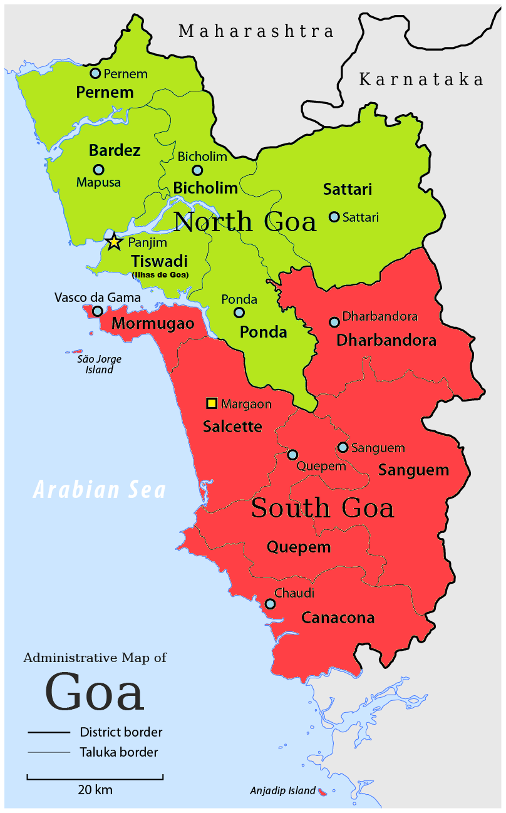

SUB-DIVISIONS OF GOA :
NORTH GOA :
The state is divided into two districts: North Goa and South Goa. Each district is administered by a district collector, appointed by the Indian government.
Panaji is the headquarters of North Goa district and is also the capital of Goa.
North Goa is further divided into three subdivisions – Panaji, Mapusa, and Bicholim; and five talukas (subdistricts) – Tiswadi/Ilhas de Goa (Panaji), Bardez (Mapusa), Pernem, Bicholim, and Sattari (Valpoi).
There are 248 villages in north goa.
SOUTH GOA :
Margao is the headquarters of South Goa district.
South Goa is further divided into five subdivisions – Ponda, Mormugao-Vasco, Margao, Quepem, and Dharbandora; and seven talukas – Ponda, Mormugao, Salcete (Margao), Quepem, and Canacona (Chaudi), Sanguem, and Dharbandora. (Ponda taluka was shifted from North Goa to South Goa in January 2015).
There are 163 villages in south goa.
Goa's major cities include Panaji, Margao, Vasco, Mapusa, Ponda, Bicholim, and Valpoi.
Panaji has the only Municipal Corporation in Goa.
There are thirteen Municipal Councils: Margao, Mormugao (including Vasco), Pernem, Mapusa, Bicholim, Sanquelim, Valpoi, Ponda, Cuncolim, Quepem, Curchorem, Sanguem, and Canacona. Goa has a total number of 334 villages.

POLITICAL HISTORY OF GOA :
The politics of Goa are a result of the uniqueness of this region due to 450 years of Portuguese rule, in comparison to three centuries of British rule experienced by the rest of India. The Indian National Congress was unable to achieve electoral success in the first two decades after the State's incorporation into India.Instead, the state was dominated by the regional political parties like Maharashtrawadi Gomantak Party and the United Goans Party.